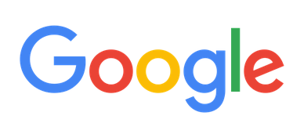

Sobre Google
Tienda
Gmail
Imágenes
apps
Iniciar Sesión

search
Buscar con Google
Voy a tener suerte
Ofrecido por Google en:
català
galego
euskara
 Tres décadas de acción climática: descubre lo que estamos haciendo
Tres décadas de acción climática: descubre lo que estamos haciendo